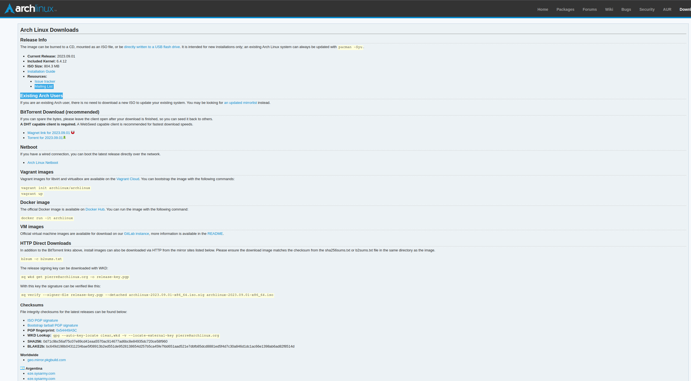
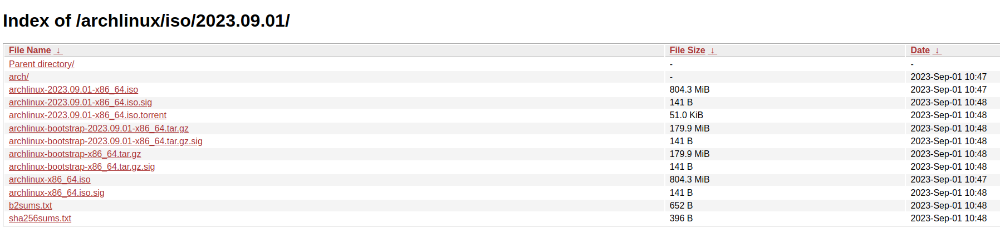

Arch Linux Overview
Arch Linux is a lightweight, rolling-release Linux distribution designed for users who want full control over their system. It follows a minimalist philosophy, providing only a base system and expecting users to build everything else to suit their needs. Its package manager, pacman, along with the Arch User Repository (AUR), gives access to one of the largest and most up-to-date software ecosystems available.
The primary strength of Arch Linux is its flexibility and cutting-edge nature. Users can fine-tune every aspect of the system, from the kernel to the desktop environment, making it ideal for developers and advanced users who want maximum customization and performance. However, this flexibility comes at the cost of complexity. Installation and maintenance require a solid understanding of Linux concepts, and updates in a rolling-release model can occasionally introduce instability if not managed carefully.
Note
This installation process is designed for systems using UEFI firmware with full disk encryption. The steps provided reflect one specific configuration and may need to be adapted for different system requirements.
Note
Always review the official Arch Linux Installation Guide before proceeding. The Arch installation process is continuously updated, and this documentation reflects a workflow that was current as of March 2024.
Pre-Installation
Before beginning the Arch Linux installation, you must download the Arch Linux ISO image and create a bootable USB drive.
Download the ISO Image
Navigate to the Arch Linux download page. This page lists official mirrors organized by geographic region.

Select a mirror close to your location. This will redirect you to a directory containing available ISO images.

Locate the file ending in .iso with the most recent date, for example:
archlinux-2023-09-01-x86_64.iso. Download this file to your local machine.
Verify the ISO Image (Recommended)
To ensure the integrity of the downloaded ISO, compare its SHA256 checksum with the value provided on the Arch Linux website.
On Linux or macOS:
sha256sum archlinux-YYYY.MM.DD-x86_64.iso
Verify that the output matches the checksum listed on the download page.
Create a Bootable USB Drive
Once the ISO image has been downloaded, it must be written to a USB drive to create bootable installation media.
Warning
All data on the USB drive will be permanently erased during this process.
A number of tools can be used for this purpose. One simple cross-platform option is USB Imager.

Download and install the version appropriate for your operating system. Launch the application to access the graphical interface shown below.

Select the downloaded ISO file, choose the target USB drive, and ensure that the Verify option is enabled. This option confirms that the data was written correctly after the process completes.
Click Write to begin creating the bootable USB drive.
Installation
This section describes how to install Arch Linux using a UEFI-based system with full disk encryption (LUKS) and Logical Volume Management (LVM).
Warning
This process will permanently erase all data on the target disk. Ensure that any important data is backed up before proceeding.
Booting the Installation Media
Insert the bootable USB drive and power on the system. Enter the UEFI firmware
menu (commonly accessed via F2, F10, F12, or DEL depending on
your hardware vendor).
Select the USB device as the boot source.
From the boot menu, select:
Arch Linux install medium (x86_64, UEFI)
Set Keyboard Layout (Optional)
List available layouts:
ls /usr/share/kbd/keymaps/**/*.map.gz
Set layout:
loadkeys <layout>
Networking Setup
Test connectivity:
ping -c 3 archlinux.org
Expected output:
3 packets transmitted, 3 received, 0% packet loss
Wireless setup:
iwctl
List devices:
device list
Example output:
NAME TYPE STATE
wlan0 station disconnected
Scan networks:
station <device> scan
station <device> get-networks
Example:
NetworkName signal security
MyWiFi **** WPA2
Connect:
station <device> connect "NetworkName"
Verify again:
ping -c 3 archlinux.org
Disk Partitioning & Encryption
Identify disk:
fdisk -l
Example:
Disk /dev/nvme0n1: 512 GiB
Partition layout result:
Device Size Type
/dev/nvme0n1p1 500M EFI System
/dev/nvme0n1p2 500M Linux filesystem
/dev/nvme0n1p3 rest Linux LVM
Format:
mkfs.fat -F32 /dev/nvme0n1p1
mkfs.ext4 /dev/nvme0n1p2
Encryption:
cryptsetup luksFormat /dev/nvme0n1p3
cryptsetup open /dev/nvme0n1p3 lvm
Expected:
Enter passphrase:
Verify passphrase:
LVM setup:
pvcreate /dev/mapper/lvm
vgcreate volgroup0 /dev/mapper/lvm
lvcreate -L 100G volgroup0 -n lv_root
lvcreate -l 100%FREE volgroup0 -n lv_home
Expected:
Logical volume "lv_root" created
Logical volume "lv_home" created
Mounting:
mount /dev/volgroup0/lv_root /mnt
Verify:
lsblk
Example:
nvme0n1
├─nvme0n1p1
├─nvme0n1p2
└─nvme0n1p3
└─lvm
├─volgroup0-lv_root
└─volgroup0-lv_home
fstab:
genfstab -U /mnt >> /mnt/etc/fstab
cat /mnt/etc/fstab
Expected:
UUID=xxxx / ext4 rw,relatime 0 1
UUID=xxxx /boot ext4 rw,relatime 0 2
UUID=xxxx /home ext4 rw,relatime 0 2
Base System Installation
Install:
pacstrap /mnt base linux linux-firmware
Expected (truncated):
installing base...
installing linux...
installing linux-firmware...
Enter system:
arch-chroot /mnt
System Configuration
Locale:
locale-gen
Expected:
Generating locales...
en_US.UTF-8... done
mkinitcpio:
mkinitcpio -P
Expected:
==> Building image from preset: /etc/mkinitcpio.d/linux.preset
==> Starting build: 'default'
-> Running build hook: [encrypt]
-> Running build hook: [lvm2]
Bootloader Installation
Install GRUB:
grub-install --target=x86_64-efi --bootloader-id=GRUB
Expected:
Installation finished. No error reported.
Generate config:
grub-mkconfig -o /boot/grub/grub.cfg
Expected:
Found linux image...
Found initramfs image...
Reboot
reboot
Expected:
LUKS password prompt appears
System boots to login prompt
Post-Installation Setup
Swap:
swapon -a
free -m
Expected:
Swap: 2048 total
Desktop Environment
GNOME:
systemctl enable gdm
Expected:
Created symlink...
Reboot:
reboot
Expected:
Graphical login screen appears
Post Installation
This section describes the packages used to build a local development environment on Arch Linux and how to install them. Configuration of these tools is handled separately in System.
Arch Package Ecosystem
The Arch Linux ecosystem provides two primary sources for software: the official
repositories, accessed via pacman, and the Arch User Repository (AUR),
typically accessed through helpers such as yay.
The official repositories contain precompiled, vetted packages maintained by Arch developers and are considered stable and secure. In contrast, the AUR is a community-driven collection of build scripts (PKGBUILDs) that allow users to compile and install software not available in official repositories.
While tools like yay simplify AUR usage, users should review PKGBUILDs before
installation, as AUR packages are not subject to the same level of review.
Git and GitHub CLI
Many tools in this setup are hosted on GitHub, so we
begin by installing git and the GitHub CLI (gh).
Install git:
sudo pacman -S git
Install GitHub CLI:
sudo pacman -S github-cli
Authenticate with GitHub:
gh auth login
Follow the prompts: - Choose GitHub.com - Select HTTPS or SSH (SSH recommended) - Authenticate via browser or token
Arch User Repository (AUR)
Install yay to access AUR packages:
git clone https://aur.archlinux.org/yay.git
cd yay
makepkg -si
Note
Avoid installing AUR packages as root. Build packages as a normal user.
Terminal Tools
Install terminal utilities:
sudo pacman -S ghostty fzf bat tree htop btop
Development Directory Structure
Create directories for development:
mkdir -p ~/Code_Dev/{Python,C,C++,OS}
Python Environment
Install Python and related tools:
sudo pacman -S python python-pip python-pipx
Enable pipx:
pipx ensurepath
Managing Python Versions (pyenv)
pyenv allows you to install and manage multiple Python versions independently
of the system Python.
Install:
sudo pacman -S pyenv
Add to shell configuration:
export PYENV_ROOT="$HOME/.pyenv"
export PATH="$PYENV_ROOT/bin:$PATH"
eval "$(pyenv init --path)"
eval "$(pyenv init -)"
Reload shell:
source ~/.zshrc
Install a version:
pyenv install 3.11.9
Set version:
pyenv global 3.11.9
Note
The system Python is managed by Arch and should not be modified directly.
Use pipx for global tools and venv or pyenv for project environments.
Poetry
Install Poetry using pipx:
pipx install poetry
Configure Poetry:
poetry config virtualenvs.in-project true
C and C++ Toolchain
Install compilers and tools:
sudo pacman -S gcc clang cmake valgrind glfw glibc
Install testing and documentation tools:
yay -S googletest-git cmocka doxygen-git
Fonts
Install fonts:
yay -S nerd-fonts-jetbrains-mono
sudo pacman -S powerline powerline-fonts
Neovim Setup
Install Neovim:
sudo pacman -S neovim
Install lazy.nvim:
git clone https://github.com/folke/lazy.nvim \
~/.local/share/nvim/lazy/lazy.nvim
Install Tree-sitter CLI:
sudo pacman -S nodejs npm
npm install -g tree-sitter-cli
tmux
Install tmux:
sudo pacman -S tmux
System Utilities
Install additional utilities:
sudo pacman -S zsh rsync fail2ban xclip libreoffice cronie openssh
yay -S neofetch-btw masterpdfeditor